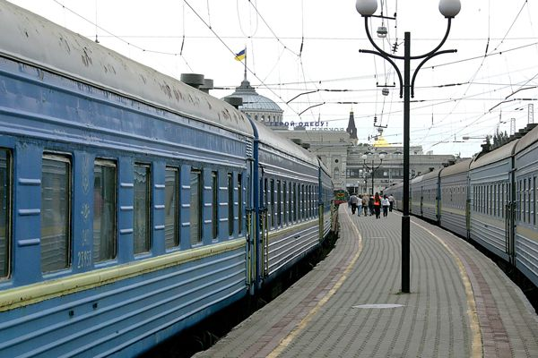
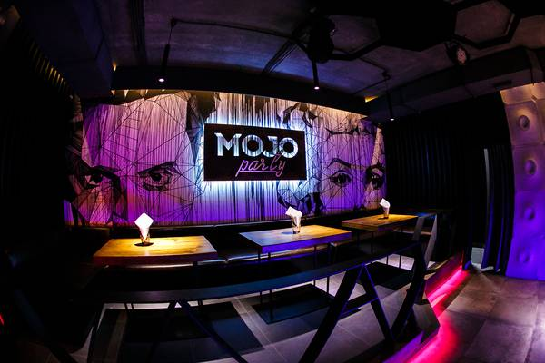
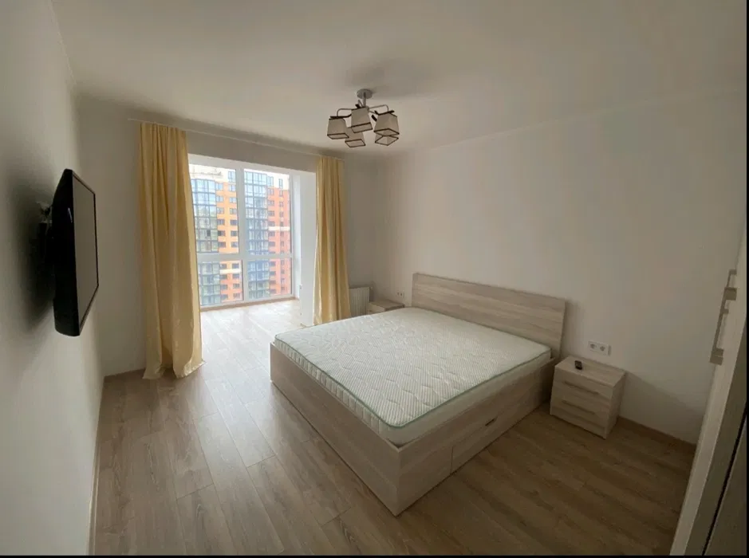
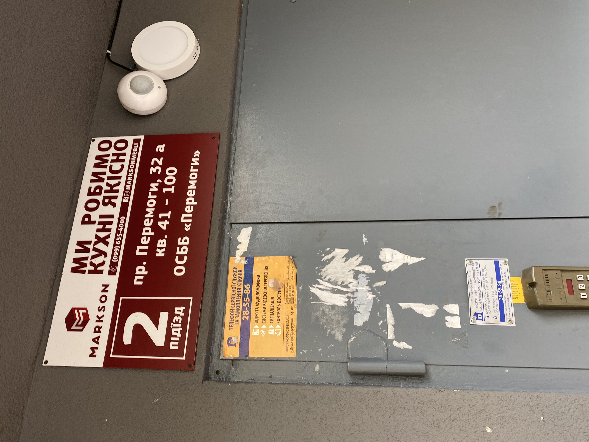
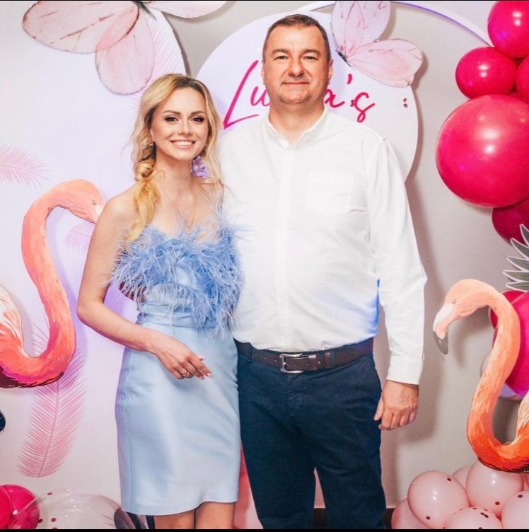
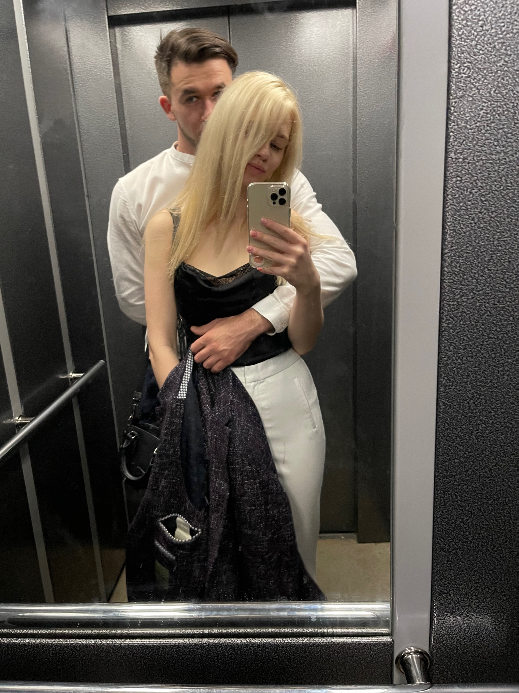

Початок
В альбомі зібрані основні моменти наших відносин. Вони викладені послідовно, і майже до кожного фото є своя історія.
Щоб її переглянути натискай на кнопку під фотокарткою яка просить на неї натиснути:)
І історія відкриється. вони не великі, але щоб відчути атмосферу вони обовязкові.
Коли дійдеш до кінця сторінки просто натискай кнопку далі і будь ласка дійди до кінця.

Це був звичайний літній вечір, момент якраз коли я перестав шукати пригод і просто планував їхати додому. Додому, де нікого не було , а я і не хотів нікого бачити. Ми з тобою ще не знайомі. Жили своє життя, як ніби в різних галактиках. Проходячи повз магазин бачу Настю. Спитав за Тараса і сказав що втомився і поїду додому. На що мені запропонували зустріч вчотирьох. В будь-який інший день, я б навіть не вагався, але тоді я думав що нічого нормального з того не вийде. Але погодився, і сказав собі, що якщо цю пригоду ми не зробимо хоча б веселою, то я більше не підпишусь найближчим часом ні на що. І зараз набираючи цей текст, я згадую той день, я дякую всім і всьому, що зміг погодитись на цю зустріч. З першої секунди як я побачив тебе біля театру, я не міг відвести погляд, я не хотів!! Ти була чарівна ззовні і така закрита зсередини. І я запалав познайомитись з тобою, відкрити тебе, я бачив, що не однією лиш зовнішністю ти чарівна.

Перший вечір пройшов. І без зайвих вагань запропонували вам зустрітися ще раз. Як зараз пам’ятаю, після першого вечора, як я може з годину, а то і дві, розповідав Тарасу до ранку, як ти мені сподобалась. По дорозі додому я думав про тебе, не міг заснути і дочекатись наступного дня, щоб знов тебе побачити. А в голові лише і думка про те, як зробити все правильно і що взагалі зробити, аби ти стала ближче. І ось він наступний вечір, і ось ми в молодості, я дивлюсь тобі прямо в очі і бачу що ти особлива. Ми їдемо на морвокзал, і фото нагадає тобі про той схід сонця, в той момент я тільки і хотів, що тебе обійняти, але не став. Той вечір був таким теплим, і не через температуру повітря, а через те, як близько ми були з тобою. Одразу домовились за наступну зустріч ,вже вдвох і це було щастя…

І ось цей день, я стою біля твоїх апартаментів. Я переживаю, але так хочу тебе побачити. І виходить Юля , така гарна і така маленька, з валізою і утюгом.. Настрій одразу вгору , готовий їхати хоч на край світу, не то шо в Академію. Спілкуємось я бачу як ти розкриваєшся , але ще боїшся, не розумієш, що відбувається. Стоїмо чекаємо Настю, а Настя на іншому кутку міста, і це перша наша спільна пригода, це було незабутньо. Поїхали в бохо, але… Це день коли ти їдеш додому, останній день разом. З самого ранку я летів в бохо аби взяти наліпки, я взяв свою футболку і напшикав її так, щоб цей запах залишився з тобою. І от думаю зараз подарую, питаю. :А як тобі бежевий колір?: І ти кажеш що не подобається.. Футболка залишилась в мене, але з наліпками я вгадав. І ось ми в бохо, поїзд за годину, я не хочу тебе відпускати, Настя вже прийшла. Ми їдемо на вокзал, ледь встигли і ось вони довгоочікувані обійми!!! Я не міг відчувати себе краще ніж в той момент, але ти вже в поїзді, я на пероні. Я вже сумую і маю тільки одну думку, Я ХОЧУ В ЛУЦЬК.

Ти не повірила, а я вже шукав квитки, бронював квартиру, думками я вже був з тобою. Такий довгий шлях, така важка дорога, але ні про що крім зустрічі з тобою я не думав. Ти сподобалась мені так сильно, що я рахував дні до того моменту коли я вирушу в цю дорогу
Я їхав і не знав куди, але ти мені сподобалась з першої секунди, з першого погляду, я їхав з величезним бажанням дізнатися про тебе все. Це була по суті лотерея , і я ні секунди не вагався. Я бачив яка ти, тих вечорів було достатньо, аби я зрозумів, це Сонечко, вона особлива. Я хочу щоб вона світила ще яскравіше.

Ми на заправці, я бачу як ти посміхаєшся, я бачу яка ти втомлена, але я обіймаю тебе і одразу забуваю за важку дорогу, одразу так тепло і добре. Ми на місці, ти проводиш екскурсію, нас вигнали з замку і фото якраз звідти. Кожну секунду я насолоджуюсь твоєю присутністю. Ми снідаємо і плануємо вечір. Ти втомлена, але погоджуєшся на все. Мені хочеться щоб ти відпочила і я проводжаю тебе додому. На вечір ми в Гості, а до вечора я хочу знайти тендітний букет , аби подарувати його цій маленькій Квіточці…
І от ми знову разом, ти весела, усміхнена. Я щасливий, дарую тобі букет і ми вирушаємо, як виявилось назустріч своїй долі і один одному. Ми в Гостях, це відео це такий яскравий спогад. Все проходить вільно і цікаво, ми декілька разів відходили розмовляти, я дізнавався тебе ще краще. Я бачив ту дистанцію і хотів її подолати , але не знав як, а виявилось секрет був тільки у повідомленні від твоєї мами, пари шотів текіли , і ніжних обіймів по дорозі в машину. Я був п’яний, але я досі відчуваю той поцілунок. Це був такий важливий крок і я щасливий, що ми зробили його разом. Не розуміючи що відбувається ,я чую від тебе що ти боїшся, боїшся бути використаною. Аби ти тільки знала мої думки в той момент, я вже не хтів тебе відпускати НІКОЛИ. І що я роблю,- продовжую оренду, я залишаюсь в луцьку на ще декілька днів. Це було єдине можливе рішення, аби показати тобі, як я хочу побути з тобою ще довше. А далі МОДЖО))

Про моджо багато писати не треба, але то було щось. Я слідкував щоб ти нічого не загубила, щоб тебе ніхто не образив. Я був поруч весь час. І та розмова в туалеті, тобі вже погано і нам треба додому. Але от сюрприз, тобі додому не можна, а я в шоці, авжеж ми поїдемо до мене, але як так зробити щоб ти не подумала, що я буду до тебе приставати?? Ми приїхали і тут срака Тараса)) А ти взагалі подумала що то Настя. Переношу Тараса, вкладаю тебе, а сам лягаю на дивані. А в голові лише :Сонечко , я хочу про тебе піклуватись, але сьогодні я сплю на дивані. І тут ти кажеш що тобі холодно, я дав ще одну ковдру, все одно холодно. І ти кажеш обійми мене. Неймовірно. Ми засинаємо…

Ранок був не менш веселий, ні з того ні з сього ти підриваєшся і біжиш збиратись. Я навіть злякався, подумав що ти образилась. А ти кажеш що срочно ДОДОМУ!! Я в шоці, але начебто все добре. І найголовніше, ми знову зустрінемось. Вже за обідом, забравши той, вже втомлений букет, я пропоную тобі стати моєю дівчиною і ти погоджуєшся. Це якась магія, я не вірю, ти мене цілуєш, немає нічого кращого. Ми назавжди запам’ятали 15 червня.

Пригоди не закінчуються. Наступний крок – вечеря з твоєю мамою. Але щоб знати на яку адресу робити доставку квітів, я роблю це фото. Ми стоїмо разом біля під’їзду. Я обіймаю найкращу людину у світі. І навіть зараз коли пройшло стільки часу, я вдячний тобі за ті моменти і буду дякувати ще не один раз.

Перша зустріч з твоєю мамою. Переживали ВСІ , але найбільше мені здається – ти. Досі пам’ятаю як ти маленька, не хотіла і слова казати в той вечір, аби тільки все пройшло добре. І я бачив як багато для тебе це значить, я не міг тебе підвести. Перша зустріч і знайомство з мамою проходять дуже добре. Я радий кожному нашому кроку і хочу цьомати тебе кожен раз як ти посміхаєшся. Ми разом і більше нічого не треба. Знайомство з Валіком, проходить так само добре як і з мамою, краще й не придумаєш. Ти щаслива , а я тим паче.

А це фото особливе. Воно перше, яке з’явилося в інстаграмі. Я так не дуже гарний, ще і з цією зачіскою. Але я такий щасливий, ти не уявляєш, хочу обнімати це Сонечко знов і знов.
І ось заключне відео цього розділу. СЛУХАТИ ЗІ ЗВУКОМ ОБОВ’ЯЗКОВО. Я їду додому, як було важко, як я не хтів. Але попереду ще стільки всього, і зараз ми розлучаємось лишу на якийсь час, хоча і ти і я знаємо, - ми завжди разом! Я відчуваю тебе, я хочу бути з тобою. Я записую це відео в автобусі і вже розумію, Я ПОВЕРНУСЬ. Ми дійшли до кінця сторінки, але це тільки початок нашої історії. Послухай відео і пішли разом на наступний етап, етап коли спалахнула любов.